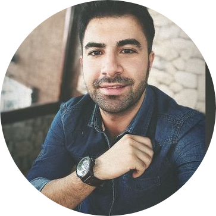

|  |
Emre CoşkunI ♥ coffee and ı ♥ upgrade myself ! I am 25. I live in Ankara. But generally I say 'world'. Because I love travelling, new social culture and new place, and of course meet new human ! I want to be one of the best developers in web development. This imagine is one of my purposes. Yes, I'm fond of the success.There are so many purposes belong me. Yes, one of them that, developer. Other things are musician, minimalist, author of book and a successfully life. |
I graduated İnternational Relations in Kırıkkale University in 2020. You know, the year has a pandemic(covid19). I choosen to improve myself and ı started to learn Programming Languages. Also, I still study Social Services in Anadolu University. I will keep going study during my life. I think recently, will study a university about Computer Sciens. Once believe and move , that is my vision. My motivation is never give up. Because ı known ı will do it. I have not any experience as a job but ı can learn and do anything quickly.Also, I am a football referee since 2013 as a active. I am assigned professional leagues in Turkey as a referee in continuously.
|
|